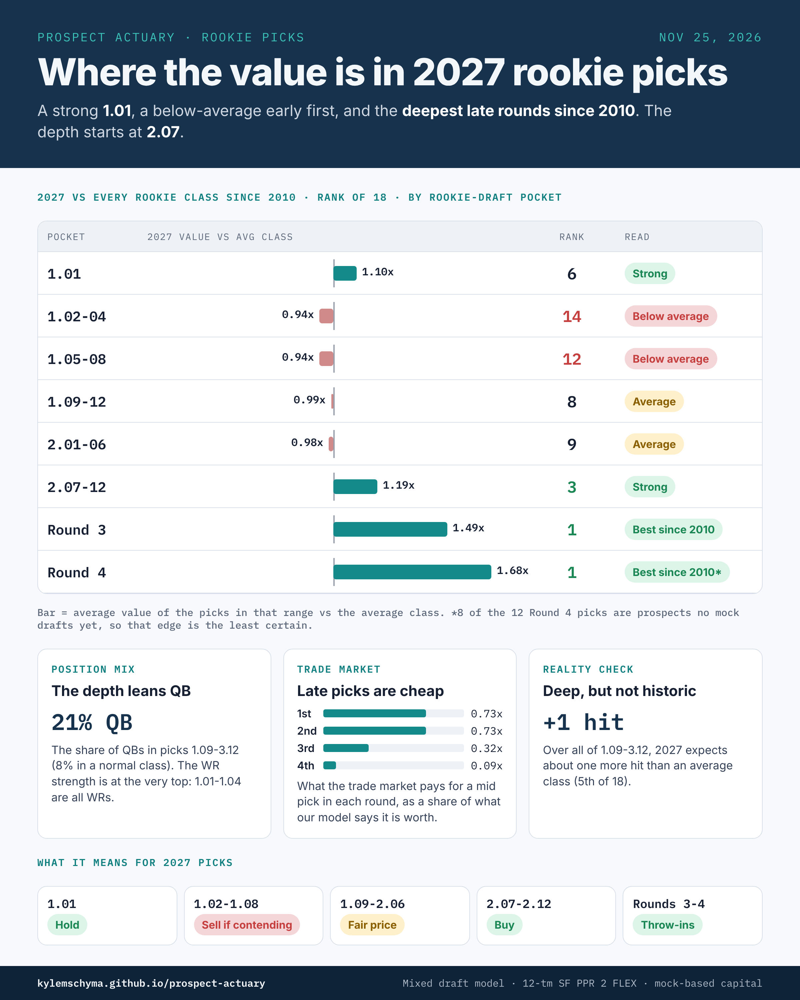
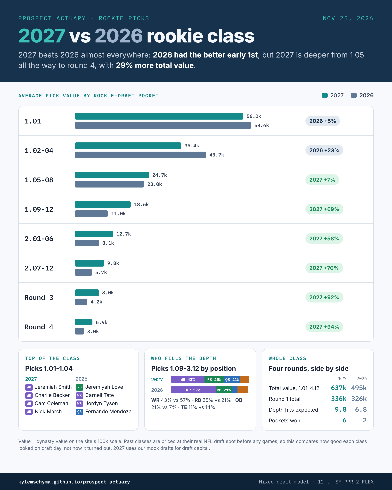
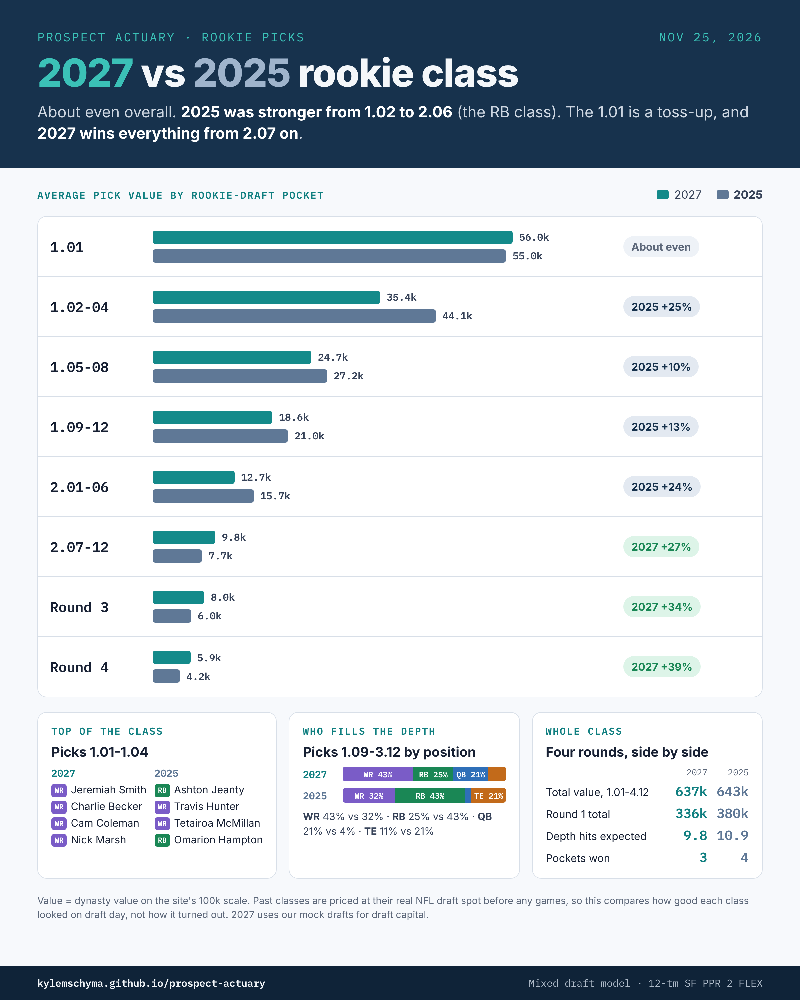
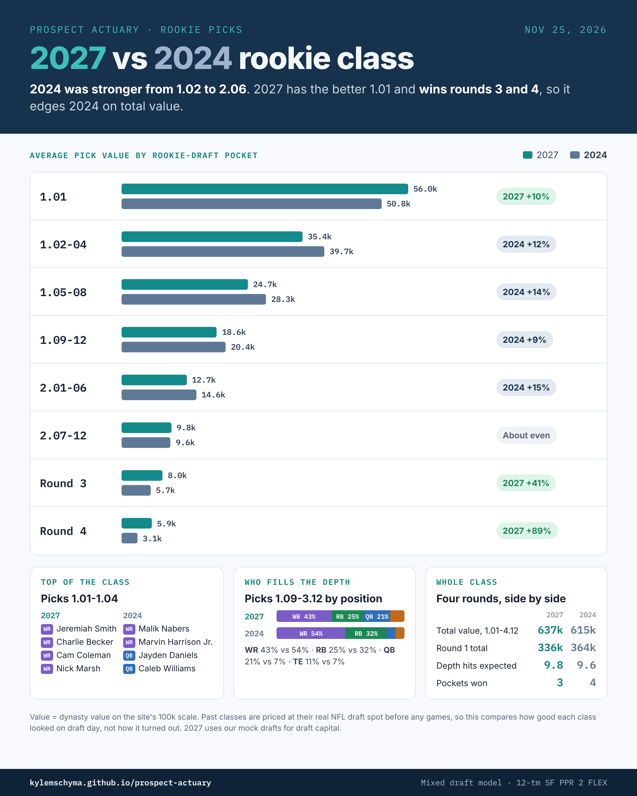

Where the value sits in the 2027 rookie class, one pick range at a time: against every class since 2010, and head to head with the last three classes.

Strong 1.01, below-average early first, average from 1.09 to 2.06, and the deepest late rounds since 2010. Full size

2027 wins 6 of 8 pockets and has 29% more total value; 2026 had the better early first. Full size

About even overall: 2025 was stronger from 1.02 to 2.06, 2027 wins from 2.07 on. Full size

2024 was stronger from 1.02 to 2.06; 2027 has the better 1.01 and wins rounds 3 and 4. Full size
Snapshot from November 25, 2026 (mixed draft model, 12 teams, superflex, PPR, 2 FLEX). Past classes are priced at their real NFL draft spot before any games, so the comparisons show how each class looked on draft day, not how it turned out. 2027 uses our mock drafts for draft capital. These images do not update with the weekly refresh. Pick values for your league are on the Trade values page.